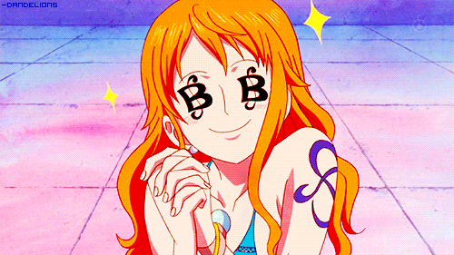

Who is Nami?
Nami is a fictional character in the popular manga and anime series, One Piece. She is one of the main protagonists of the series and is a member of the Straw Hat Pirates, a group of pirates led by Monkey D. Luffy. Nami is the navigator of the crew and is known for her exceptional map-making and navigational skills. She is also a skilled thief and is often seen using her abilities to steal from unsuspecting victims.
Nami is a complex character with a tragic past. When she was a child, her hometown was destroyed by pirates, leaving her orphaned and with a deep distrust of pirates. She eventually joined the Arlong Pirates, a group of fishmen who took over her village and enslaved her people. However, she was able to escape and joined the Straw Hat Pirates in order to pursue her dream of creating a map of the entire world.
Nami is a strong-willed and determined character who is not afraid to speak her mind. She is also known for her sharp wit and ability to outsmart her enemies. Despite her tough exterior, Nami cares deeply for her friends and will go to great lengths to protect them. She is also fiercely independent and does not rely on anyone else to achieve her goals.
Throughout the series, Nami has developed a close bond with the other members of the Straw Hat Pirates, particularly Luffy and Usopp. She has also shown a willingness to put herself in danger in order to protect her friends, and has played a crucial role in several battles against powerful enemies. Nami is a beloved character in the One Piece universe and is often praised for her intelligence, strength, and resilience.